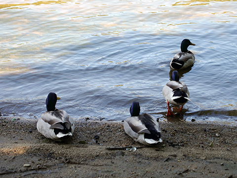

Vamos imaginar que tens um produto ou um portofolio ou uma ideia e que queres vender, mostrar ou partilhar com o mundo. Qual a melhor forma de o fazeres?
Talvez com o teu próprio website. Mas antes de colocares um site online, queres ter uma coisa com aspecto profissional ou pelo menos com um aspeto decente.
Então por onde vais começar?
Conteúdo
O objetivo do design é melhorar a apresentação do conteúdo ao qual é aplicado. Pode parecer óbvio, mas o conteúdo, sendo o elemento principal de um website, não deve ser deixado para o fim.
O conteúdo escrito, como este parágrafo que estás a ler agora, representa mais de 90% dos conteúdos da Web e o estilo que dás a um texto é uma grande ajuda para os leitores (ou não, e neste caso os visitantes não ficam muito tempo no teu site).
Vamos supor que já tens um ficheiro HTML com alguns parágrafos de texto que queres publicar (o ficheiro que copiaste antes) e também já criaste um arquivo css vazio e até o ligaste ao HTML com o elemento link, qual é a primeira declaração que vais escrever?
Centrar
Texto muito longo é mais difícil de analisar e também de ler. Definir um limite de caracteres por linha melhora muito a legibilidade e o apelo à leitura perante uma parede de texto corrido.
body {
margin: 0 auto;
max-width: 50em;
}
Depois de estilizar os blocos de texto, podemos pensar em tratar do próprio texto!
Familias de fontes
A fonte por defeito dos navegadores é a "Times", que pode parecer um pouco simples (principalmente porque é a fonte "de fábrica"). Alterar para um tipo sem serifas como uma "Helvetica" ou uma "Arial" altera logo o aspeto de um site.
body {
font-family: "Helvetica", "Arial", sans-serif;
}
Mas se preferes uma fonte serifada recomendo que uses a "Georgia".
Agora que melhorámos a fonte esteticamente, podemos também torná-la mais legível.
Espaçamento
Espaço negativo é um elemento crítico para o design, ao lado de outros como tipografia, cor, fotografia e composição, etc. A área em volta e dentro dos conteúdos que não possui nenhum tipo de informação mas que torna todo o site mais legível, fácil de compreender e esteticamente agradáveis.
body {
line-height: 1.5;
padding: 4em 1em;
}
header h2 {
margin-top: 1em;
padding-top: 1em;
text-shadow: 0 0 8px #0055FF;
}
Apesar de termos melhorado todo o layout do site, ainda faltam alguns pormenores. 😜
Cor & contraste
Texto preto em fundo branco, apesar do alto contraste, pode ser cansativo para os olhos. Usar um tom de preto mais suave (ou um cinzento muito escuro) pode tornar o texto mais confortável de ler.
body {
color: #555;
}
Para manter um contraste maior em alguns casos vamos escolher um tom mais escuro para títulos e negritos e aumentar o traço da fonte.
h1, h2, strong {
color: #333;
font-weight: 700;
}
E já melhorámos muito esta página visualmente, mas podemos destacar alguns elementos, como seções, artigos e rodapé, para serem mais fáceis de identificar.
Equilíbrio
Apenas uns toques para a página ficar mais equilibrada:
section, footer {
background: #e4f0f5;
padding: 2px 4px;
vertical-align: text-bottom;
}
article {
padding: 1em;
}
A partir daqui o objetivo é destacar a página e seguir uma linha gráfica.
Cor primária
A maior parte das marcas tem uma cor primária que funciona como identidade. Num website, esta cor pode servir para enfatizar os elementos interativos, como as ligações.
a {
color: #e81c4f;
}
Para manter o equilíbrio vamos acrescentar mais cores.
Cores secundárias
Uma cor de destaque pode ser complementada com tons mais subtis, para serem usados em molduras, planos de fundo ou até no corpo de texto.
section, footer {
background: #f5f7f9;
border-bottom: 1px solid #d8dee9;
color: #a7adba;
border-left: 2px solid #69c;
}
E se mexemos nas cores porque não alterar também as formas...
Fonte personalizada
Como o texto é o conteúdo principal de um website, usar um tipo de letra personalizado dá mais carácter ao nosso site.
Podes carregar para o servidor qualquer tipo de webfont ou usar um serviço próprio online. Existem vários, alguns são pagos, mas hoje vamos usar a fonte "Roboto" do serviço gratuito Google Fonts. A primeira parte é um elemento para a head do ficheiro HTML:
link href="https://fonts.googleapis.com/css2?family=Roboto+Mono:wght@300&family=Roboto:wght@300&display=swap" rel="stylesheet"
article {
font-family: "Roboto Mono", monospace;
}
Mas não é só de texto que é feito um website, aliás existe um tipo de conteúdo que vale por mil palavras...

Imagens, gráficos e ícones podem ser usados como complementos para ilustrar um conteúdo ou serem a própria mensagem que se deseja transmitir.
Vamos colocar uma imagem no cabeçalho desta página.
header {
line-height: 1.2;
padding: 2vw 2em;
text-align: center;
}
html {
background-image: url("header.jpg");
background-position: 0 75%;
background-repeat: no-repeat;
background-size: 25%;
max-height: center;
}
Colocamos também um logotipo (a imagem é definida no HTML, o CSS só vai enquadrá-la no layout)
header img {
display: inline-block;
height: 120px;
vertical-align: top;
width: 120px;
}
E aproveitamos para melhorar ainda mais os estilos de texto. Assim temos um título do site merecedor do registo.
header h1 {
color: white;
font-size: 2.5em;
font-weight: 300;
}
header a, footer a {
border: 1px solid #e81c4f;
border-radius: 290486px;
color: white;
font-size: 0.6em;
letter-spacing: 0.2em;
padding: 1em 2em;
text-transform: uppercase;
text-decoration: none;
transition: none 200ms ease-out;
transition-property: color, background;
}
header a:hover, footer a:hover {
background: #e81c4f;
color: white;
}
E pronto! Construimos uma página decente em pouco tempo, seguindo alguns princípios de design e com código HTML e CSS. Agora só falta acrescentares as imagens e alterares algum código de acordo com as características próprias do teu conteúdo (experimenta criar links no cabeçalho e rodapé). Uma última coisa...